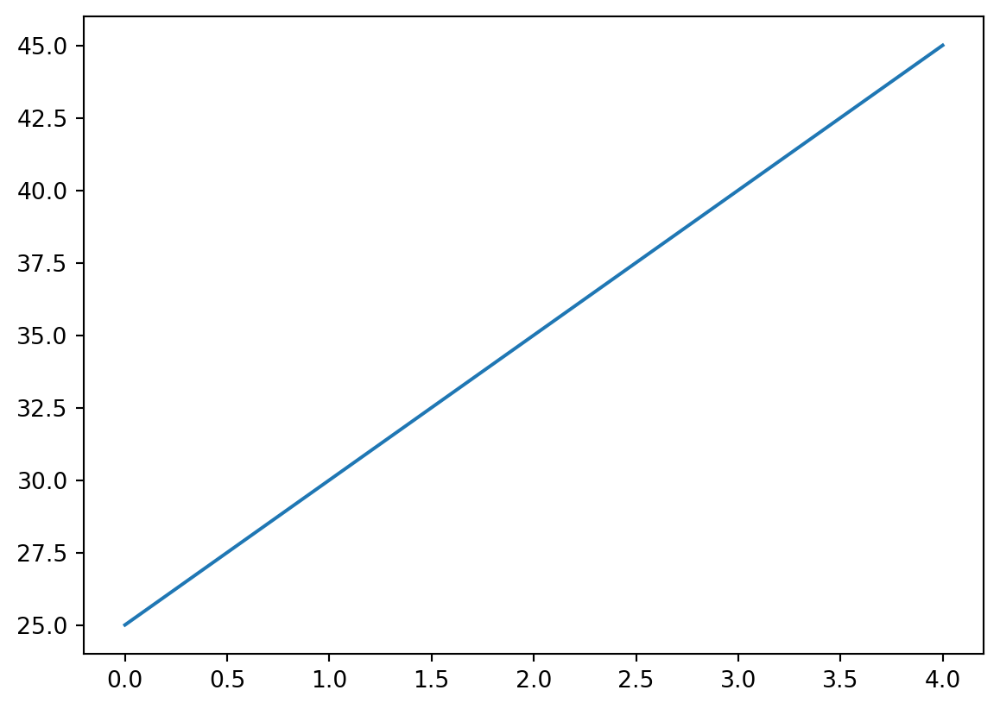

# Import the Pandas package
import pandas as pd
# Import the NumPy package
import numpy as np2 Data extraction and transformation
This case covers the pandas and numpy libraries within Python. It also covers descriptive statistics.
2.1 Installing and importing packages
External libraries (a.k.a. packages) are code bases that contain a variety of pre-written functions and tools. This allows you to perform a variety of complex tasks in Python without having to “reinvent the wheel”, i.e., build everything from the ground up. We will use two core packages: pandas and numpy.
pandas is an external library that provides functionality for data analysis. Pandas specifically offers a variety of data structures and data manipulation methods that allow you to perform complex tasks with simple, one-line commands.
numpy is a external library that offers numerous mathematical operations. We will use numpy later in the case. Together, pandas and numpy allow you to create a data science workflow within Python. numpy is in many ways foundational to pandas, providing vectorized operations, while pandas provides higher level abstractions built on top of numpy.
Before you use a module/package/library, it must be installed. Note that you only need to install each module/package/library once per machine. The syntax for installing a module/package/library on your machine will be either:
!pip install package nameor
!conda install package nameFor example, you can run one of the following commands in a code cell to install the package pandas.
# If your machine uses pip
!pip install pandas
# If your machine uses Anaconda
!conda install pandasBefore using a package in each notebook or session, it must be imported. Unlike installation, importing must be done every time you use python. Let’s import both packages using the import keyword. We will rename pandas to pd and numpy to np using the as keyword. This allows us to use the short name abbreviation when we want to reference any function that is inside either package. The abbreviations we chose are standard across the data science industry and should be followed unless there is a very good reason not to.
2.2 Fundamentals of pandas
2.2.1 Series and DataFrame value types
pandas is a Python library that facilitates a wide range of data analysis and manipulation. Before, you saw basic data structures in Python such as lists and dictionaries. While you can build a basic data table (similar to an Excel spreadsheet) using nested lists in Python, they get quite difficult to work with. By contrast, in pandas the table data structure, known as the DataFrame, is a first-class citizen. It allows us to easily manipulate data by thinking of data in terms of rows and columns.
If you’ve ever used or heard of R or SQL before, pandas brings some functionality from each of these to Python, allowing you to structure and filter data more efficiently than pure Python. This efficiency is seen in two distinct ways:
- Scripts written using
pandaswill often run faster than scripts written in pure Python - Scripts written using
pandaswill often contain far fewer lines of code than the equivalent script written in pure Python.
At the core of the pandas library are two fundamental data structures/objects: 1. Series 2. DataFrame
A Series object stores single-column data along with an index. An index is just a way of “numbering” the Series object. For example, in this case study, the indices will be dates, while the single-column data may be stock prices or daily trading volume.
A DataFrame object is a two-dimensional tabular data structure with labeled axes. It is conceptually helpful to think of a DataFrame object as a collection of Series objects. Namely, think of each column in a DataFrame as a single Series object, where each of these Series objects shares a common index - the index of the DataFrame object.
Below is the syntax for creating a Series object, followed by the syntax for creating a DataFrame object. Note that DataFrame objects can also have a single-column – think of this as a DataFrame consisting of a single Series object:
Series: A one-dimensional labeled array capable of holding data of any type (integer, string, float, etc.). Created using
pd.Series(data, index=index), where data can be a list, dictionary, or scalar value.DataFrame: A two-dimensional labeled data structure with columns of potentially different types. Created using pd.
DataFrame(data, index=index, columns=columns), where data can be a dictionary of lists, list of dictionaries, or 2D array-like object.
Example:
# Create a simple Series object
simple_series = pd.Series(
index=[0, 1, 2, 3], name="Volume", data=[1000, 2600, 1524, 98000]
)
simple_series
# Create a simple DataFrame object
simple_df = pd.DataFrame(
index=[0, 1, 2, 3], columns=["Volume"], data=[1000, 2600, 1524, 98000]
)
simple_df| Volume | |
|---|---|
| 0 | 1000 |
| 1 | 2600 |
| 2 | 1524 |
| 3 | 98000 |
DataFrame objects are more general than Series objects, and one DataFrame can hold many Series objects, each as a different column. Let’s create a two-column DataFrame object:
# Create another DataFrame object
another_df = pd.DataFrame(
index=[0, 1, 2, 3],
columns=["Date", "Volume"],
data=[[20190101, 1000], [20190102, 2600], [20190103, 1524], [20190104, 98000]]
)
another_df| Date | Volume | |
|---|---|---|
| 0 | 20190101 | 1000 |
| 1 | 20190102 | 2600 |
| 2 | 20190103 | 1524 |
| 3 | 20190104 | 98000 |
Notice how a list of lists was used to specify the data in the another_df DataFrame. Each element of the outer list corresponds to a row in the DataFrame, so the outer list has 4 elements because there are 4 indices. Each element of the each inner list has 2 elements because the DataFrame has two columns.
2.2.2 Reading in data
pandas allows easy loading of CSV files through the use of the method pd.read_csv().
Syntax:
df = pd.read_csv(File name with path as a string)Before loading the CSV file, you need to specify its location on your computer. The file path is the address that tells Python where to find the file. You cna use one of the following ways to specify the location
- Absolute Path: This is the complete path to the file starting from the root directory (e.g., C:/Users/username/Documents/data.csv or /Users/YourUsername/Documents/data.csv).
- Relative Path: This is the path relative to the current working directory where your Python script or Jupyter notebook is located (e.g., data/data.csv). If your CSV file is in the same directory as your Python script or Jupyter notebook, you can just provide the file name.
Examples:
# Load a CSV file as a DataFrame and assign to df
# Same folder: Here D.csv is in the same folder as my notebook
df = pd.read_csv("D.csv")
# Relative path: Here D.csv is in a folder called data, and the folder data is in the same folder as my notebook
df = pd.read_csv("data/D.csv")
# Absolute path: Here the full path starting from my hardrive, C:, to the file D.csv is stated.
# On mac, it will look like: /Users/YourUsername/Documents/data.csv
df = pd.read_csv("C:\Users\OneDrive - York University\Teaching\Courses\Math1130\D.csv")To find out which folder your relative path starts from, use the command getcwd() from the os module.
import os
# Get the current working directory
current_directory = os.getcwd()
# Print the current working directory
print("Current Directory:", current_directory)2.2.3 Basic commands for DataFrames
There are several common methods and attributes that allow one to take a peek at the data and get a sense of it:
DataFrame.head()-> returns the column names and first 5 rows by defaultDataFrame.tail()-> returns the column names and last 5 rows by defaultDataFrame.shape-> returns (num_rows, num_columns)DataFrame.columns-> returns index of columnsDataFrame.index-> returns index of rows
In your spare time please check the pandas documentation and explore the parameters of these methods as well as other methods. Familiarity with this library will dramatically improve your productivity as a data scientist.
Using df.head() and df.tail() we can take a look at the data contents. Unless specified otherwise, Series and DataFrame objects have indices starting at 0 and increase monotonically upward along the integers.
Example:
# Example DataFrame
data = {
'Name': ['Alice', 'Bob', 'Charlie', 'David', 'Eve'],
'Age': [25, 30, 35, 40, 45],
'City': ['New York', 'Los Angeles', 'Chicago', 'Houston', 'Miami']
}
df = pd.DataFrame(data)
# 1. DataFrame.head()
print("DataFrame.head():")
print(df.head())
print() # Blank line for separation
# 2. DataFrame.tail()
print("DataFrame.tail():")
print(df.tail())
print() # Blank line for separation
# 3. DataFrame.shape
print("DataFrame.shape:")
print(df.shape) # Output: (5, 3) - 5 rows, 3 columns
print() # Blank line for separation
# 4. DataFrame.columns
print("DataFrame.columns:")
print(df.columns) # Output: Index(['Name', 'Age', 'City'], dtype='object')
print() # Blank line for separation
# 5. DataFrame.index
print("DataFrame.index:")
print(df.index) # Output: RangeIndex(start=0, stop=5, step=1)
print() # Blank line for separation
# Attributes
# 1. shape attribute
print("df.shape attribute:", df.shape) # Output: (5, 3) - 5 rows, 3 columns
# 2. columns attribute
print("df.columns attribute:", df.columns) # Output: Index(['Name', 'Age', 'City'], dtype='object')
# 3. index attribute
print("df.index attribute:", df.index) # Output: RangeIndex(start=0, stop=5, step=1)DataFrame.head():
Name Age City
0 Alice 25 New York
1 Bob 30 Los Angeles
2 Charlie 35 Chicago
3 David 40 Houston
4 Eve 45 Miami
DataFrame.tail():
Name Age City
0 Alice 25 New York
1 Bob 30 Los Angeles
2 Charlie 35 Chicago
3 David 40 Houston
4 Eve 45 Miami
DataFrame.shape:
(5, 3)
DataFrame.columns:
Index(['Name', 'Age', 'City'], dtype='object')
DataFrame.index:
RangeIndex(start=0, stop=5, step=1)
df.shape attribute: (5, 3)
df.columns attribute: Index(['Name', 'Age', 'City'], dtype='object')
df.index attribute: RangeIndex(start=0, stop=5, step=1)2.2.4 Creating new columns and variables
We can create new columns by adding new columns to the DataFrame or creating a new column based on existing columns:
# Example DataFrame
data = {
'Name': ['Alice', 'Bob', 'Charlie', 'David', 'Eve'],
'Age': [25, 30, 35, 40, 45],
'City': ['New York', 'Los Angeles', 'Chicago', 'Houston', 'Miami']
}
df = pd.DataFrame(data)
# 1. Adding new columns to the DataFrame
df['Gender'] = ['Female', 'Male', 'Male', 'Male', 'Female']
df['Salary'] = [50000, 60000, 75000, 80000, 70000]
print("DataFrame with new columns:")
print(df)
print() # Blank line for separation
# 2. Creating a new column based on existing ones
df['Age_Squared'] = df['Age']**df['Age']
print("DataFrame with new 'Age_Squared' column:")
print(df)
# 3. We can also create columns based on multiple, other columns
df['Salary_over_Age'] = df['Salary']/df['Age']
print("DataFrame with new 'Salary_over_Age' column:")
print(df)DataFrame with new columns:
Name Age City Gender Salary
0 Alice 25 New York Female 50000
1 Bob 30 Los Angeles Male 60000
2 Charlie 35 Chicago Male 75000
3 David 40 Houston Male 80000
4 Eve 45 Miami Female 70000
DataFrame with new 'Age_Squared' column:
Name Age City Gender Salary Age_Squared
0 Alice 25 New York Female 50000 -6776596920136667815
1 Bob 30 Los Angeles Male 60000 2565992168703393792
2 Charlie 35 Chicago Male 75000 8407224849895527163
3 David 40 Houston Male 80000 0
4 Eve 45 Miami Female 70000 2604998672350111773
DataFrame with new 'Salary_over_Age' column:
Name Age City Gender Salary Age_Squared \
0 Alice 25 New York Female 50000 -6776596920136667815
1 Bob 30 Los Angeles Male 60000 2565992168703393792
2 Charlie 35 Chicago Male 75000 8407224849895527163
3 David 40 Houston Male 80000 0
4 Eve 45 Miami Female 70000 2604998672350111773
Salary_over_Age
0 2000.000000
1 2000.000000
2 2142.857143
3 2000.000000
4 1555.555556 Here we see the power of pandas. We can simply perform mathematical operations on columns of DataFrames just as if the DataFrames were single variables themselves.
2.3 Distributions and summary statistics
A common first step in data analysis is to learn about the characteristics or distribution of each of the relevant columns.
2.3.1 Summary statistics
Summary statistics are numerical measures that describe important aspects of a column in a dataset. They provide a concise overview of the data’s characteristics without needing to examine each individual value.
- Examples of Summary Statistics:
- Mean: The average value of all data points.
- Median: The middle value in a sorted list of numbers.
- Mode: The most frequently occurring value.
- Max and Minimum: The maximum and minimum values in a column.
- Range: The difference between the maximum and minimum values.
- Standard Deviation: A measure of the amount of variation or dispersion in a set of values. The standard deviation is the square root of the average of the squared distances between the data points and the the mean of the column.
- Percentiles: Values below which a given percentage of observations fall.
For now, we can think of the distribution of a data column as a description of various aspects of that column. The distribution can be described through summary statistics, or as we will see later, through plots.
2.3.2 Standard deviation:
Standard Deviation is a measure of how spread out or dispersed the values in a dataset are from the mean (average) of the dataset. It tells you how much the individual data points typically differ from the mean value.
- Small Standard Deviation:
- What it means: Most of the data points are close to the mean.
- Example: If the standard deviation of test scores in a class is small, it means most students scored close to the average score. There is less variability in scores.
- Large Standard Deviation:
- What it means: The data points are spread out over a wider range of values.
- Example: If the standard deviation of test scores in a class is large, it means students’ scores vary widely from the average. Some students scored much higher or lower than the average.
- Zero Standard Deviation:
- What it means: All data points are exactly the same.
- Example: If every student in a class scored the same on a test, the standard deviation would be zero, indicating no variability.
Imagine you have two sets of data representing the ages of two different groups of people.
- Group 1: Ages are [25, 26, 25, 24, 25].
- The mean age is 25.
- The standard deviation is small because all ages are very close to the mean.
- Group 2: Ages are [20, 30, 25, 40, 10].
- The mean age is also 25.
- The standard deviation is large because the ages are spread out over a wide range (from 10 to 40).
In summary, the standard deviation helps you understand the variability of your data. A smaller standard deviation indicates data points are close to the mean, while a larger standard deviation indicates data points are more spread out. This information is useful for comparing datasets, understanding data consistency, and identifying outliers.
2.3.3 Summary statistics example:
# Example DataFrame
data = {
'Name': ['Alice', 'Bob', 'Charlie', 'David', 'Eve'],
'Age': [25, 30, 30, 40, 35],
'Salary': [50000, 60000, 75000, 80000, 70000]
}
df = pd.DataFrame(data)
# Mean: The average value of all data points
mean_value = df['Age'].mean()
print(f"Mean: {mean_value}")
# Median: The middle value in a sorted list of numbers
median_value = df['Age'].median()
print(f"Median: {median_value}")
# Mode: The most frequently occurring value
mode_value = df['Age'].mode()
print(f"Mode: {mode_value.values}")
# Max and Minimum: The maximum and minimum values in a column
max_value = df['Age'].max()
min_value = df['Age'].min()
print(f"Max: {max_value}")
print(f"Min: {min_value}")
# Range: The difference between the maximum and minimum values
range_value = max_value - min_value
print(f"Range: {range_value}")
# Standard Deviation: A measure of the amount of variation or dispersion in a set of values
std_dev = df['Age'].std()
print(f"Standard Deviation: {std_dev}")
# Percentiles: Values below which a given percentage of observations fall
percentile_25 = df['Age'].quantile(0.25)
percentile_50 = df['Age'].quantile(0.50)
percentile_75 = df['Age'].quantile(0.75)
print(f"25th Percentile: {percentile_25}")
print(f"50th Percentile: {percentile_50}")
print(f"75th Percentile: {percentile_75}")
# Describe:
df['Name'].describe()
df['Age'].describe()
df.describe()Mean: 32.0
Median: 30.0
Mode: [30]
Max: 40
Min: 25
Range: 15
Standard Deviation: 5.70087712549569
25th Percentile: 30.0
50th Percentile: 30.0
75th Percentile: 35.0| Age | Salary | |
|---|---|---|
| count | 5.000000 | 5.000000 |
| mean | 32.000000 | 67000.000000 |
| std | 5.700877 | 12041.594579 |
| min | 25.000000 | 50000.000000 |
| 25% | 30.000000 | 60000.000000 |
| 50% | 30.000000 | 70000.000000 |
| 75% | 35.000000 | 75000.000000 |
| max | 40.000000 | 80000.000000 |
In addition to describe, there is a value_counts() method for checking the frequency of elements in categorical data. When applied to a DataFrame class, value_counts() will return the frequency of each row in the DataFrame. In other words, for each unique row it returns how many instances of that row are in the DataFrame. When applied to a Series class value_counts() will return the frequency of each unique value in the given Series class:
dict_data = {
"numbers": [1, 2, 3, 4, 5, 6, 7, 8,1],
"color": ["red", "red", "red", "blue", "blue", "green", "blue", "green","red"],
}
category_df = pd.DataFrame(data=dict_data)
category_df
#Gives the frquency of each unique row in the DataFrame
category_df.value_counts()
#Gives the frquency of each unique value in the Series
category_df['color'].value_counts()color
red 4
blue 3
green 2
Name: count, dtype: int642.4 More on pandas
2.4.1 Aggregating DataFrames
One way to combined multiple DataFrames is through the use of the pd.concat() method from pandas. We can input a list of DataFrames into pd.concat() that we’d like to concatenate. The pd.concat() function is used to concatenate (combine) two or more DataFrames or Series along a particular axis (rows or columns).
Examples:
# 1
# Create two example DataFrames
data1 = {
'Name': ['Alice', 'Bob'],
'Age': [25, 30],
'City': ['New York', 'Los Angeles']
}
df1 = pd.DataFrame(data1)
data2 = {
'Name': ['Charlie', 'David'],
'Age': [35, 40],
'City': ['Chicago', 'Houston']
}
df2 = pd.DataFrame(data2)
# Concatenate the two DataFrames
result = pd.concat([df1, df2], ignore_index=True)
print("Concatenated DataFrame:")
print(result)Concatenated DataFrame:
Name Age City
0 Alice 25 New York
1 Bob 30 Los Angeles
2 Charlie 35 Chicago
3 David 40 HoustonExplanation: Two DataFrames (df1 and df2) are created with identical columns. The pd.concat([df1, df2]) function concatenates df1 and df2 along the rows (default behavior). The ignore_index=True argument reindexes the resulting DataFrame to have a continuous index.
# 2
# Create two example DataFrames
data1 = {
'Name': ['Alice', 'Bob'],
'Age': [25, 30]
}
df1 = pd.DataFrame(data1)
data2 = {
'City': ['New York', 'Los Angeles'],
'Salary': [50000, 60000]
}
df2 = pd.DataFrame(data2)
# Concatenate the two DataFrames along columns
result = pd.concat([df1, df2], axis=1)
print("Concatenated DataFrame along columns:")
print(result)Concatenated DataFrame along columns:
Name Age City Salary
0 Alice 25 New York 50000
1 Bob 30 Los Angeles 60000Explanation: pd.concat([df1, df2], axis=1) concatenates df1 and df2 along the columns, resulting in a DataFrame that combines the columns of both input DataFrames. Using pd.concat(), you can easily combine multiple DataFrames or Series into a single DataFrame, which is useful for data manipulation and analysis tasks.
2.4.2 Filtering DataFrames
Sure! Filtering a pandas DataFrame means selecting rows that meet certain criteria. This is often done using conditions on one or more columns. Here’s a simple example to illustrate how filtering works:
2.4.3 Example DataFrame:
import pandas as pd
# Create an example DataFrame
data = {
'Name': ['Alice', 'Bob', 'Charlie', 'David', 'Eve'],
'Age': [25, 30, 35, 40, 45],
'City': ['New York', 'Los Angeles', 'Chicago', 'Houston', 'Miami']
}
df = pd.DataFrame(data)
print("Original DataFrame:")
print(df)2.4.4 Filtering the DataFrame:
Filtering a DataFrame means selecting rows that meet certain criteria. This is often done using conditions on one or more columns. Here’s a simple example to illustrate how filtering works:
import pandas as pd
# Create an example DataFrame
data = {
'Name': ['Alice', 'Bob', 'Charlie', 'David', 'Eve'],
'Age': [25, 30, 35, 40, 45],
'City': ['New York', 'Los Angeles', 'Chicago', 'Houston', 'Miami']
}
df = pd.DataFrame(data)
print("Original DataFrame:")
print(df)
# Filter rows where Age is greater than 30
filtered_df = df[df['Age'] > 30]
print("\nFiltered DataFrame (Age > 30):")
print(filtered_df)
# Filter rows where City is 'Chicago'
filtered_df_city = df[df['City'] == 'Chicago']
print("\nFiltered DataFrame (City is Chicago):")
print(filtered_df_city)
# Filter rows where Age is between 30 and 40 (inclusive)
filtered_df_age_range = df[(df['Age'] >= 30) & (df['Age'] <= 40)]
print("\nFiltered DataFrame (30 <= Age <= 40):")
print(filtered_df_age_range)Original DataFrame:
Name Age City
0 Alice 25 New York
1 Bob 30 Los Angeles
2 Charlie 35 Chicago
3 David 40 Houston
4 Eve 45 Miami
Filtered DataFrame (Age > 30):
Name Age City
2 Charlie 35 Chicago
3 David 40 Houston
4 Eve 45 Miami
Filtered DataFrame (City is Chicago):
Name Age City
2 Charlie 35 Chicago
Filtered DataFrame (30 <= Age <= 40):
Name Age City
1 Bob 30 Los Angeles
2 Charlie 35 Chicago
3 David 40 HoustonExplanation:
- df[‘Age’] > 30: This creates a boolean Series that is
Truefor rows where the ‘Age’ value is greater than 30 andFalseotherwise. - df[df[‘Age’] > 30]: This filters the DataFrame, returning only the rows where the condition is
True. - df[‘City’] == ‘Chicago’: This creates a boolean Series that is
Truefor rows where the ‘City’ value is ‘Chicago’. - df[(df[‘Age’] >= 30) & (df[‘Age’] <= 40)]: This filters the DataFrame using multiple conditions. The
&operator is used to combine conditions, ensuring both conditions must beTruefor a row to be included.
This example demonstrates how to filter a pandas DataFrame based on different conditions, helping you to extract specific subsets of data that meet your criteria.
2.4.5 Sorting
The sort_values() method in pandas is used to sort a DataFrame or Series by one or more columns or indices.
Syntax:
DataFrame.sort_values(by, axis=0, ascending=True, na_position='last', ignore_index=False)2.4.6 Parameters:
- by: (str or list of str) The name(s) of the column(s) or index level(s) to sort by.
- axis: (int or str, default 0) The axis to sort along. 0 or ‘index’ to sort rows, 1 or ‘columns’ to sort columns.
- ascending: (bool or list of bool, default True) Sort ascending vs. descending. Specify list for multiple sort orders.
- na_position: (str, default ‘last’) ‘first’ puts NaNs at the beginning, ‘last’ puts NaNs at the end.
- ignore_index: (bool, default False) If True, the resulting index will be labeled 0, 1, …, n - 1.
Example:
Let’s create an example DataFrame and sort it using sort_values().
# Create an example DataFrame
data = {
'Name': ['Alice', 'Bob', 'Charlie', 'David', 'Eve'],
'Age': [25, 30, 35, 40, 45],
'Salary': [50000, 60000, 75000, 80000, 70000]
}
df = pd.DataFrame(data)
print("Original DataFrame:")
print(df)
# Sort the DataFrame by 'Age' in ascending order
sorted_df = df.sort_values(by='Age')
print("\nDataFrame sorted by Age:")
print(sorted_df)
# Sort the DataFrame by 'Salary' in descending order
sorted_df_desc = df.sort_values(by='Salary', ascending=False)
print("\nDataFrame sorted by Salary in descending order:")
print(sorted_df_desc)
# Sort the DataFrame by 'Age' and then by 'Salary'
sorted_df_multi = df.sort_values(by=['Age', 'Salary'])
print("\nDataFrame sorted by Age and then by Salary:")
print(sorted_df_multi)In these examples: - The DataFrame is sorted by the ‘Age’ column in ascending order. - The DataFrame is sorted by the ‘Salary’ column in descending order. - The DataFrame is sorted first by the ‘Age’ column, and within each age group, by the ‘Salary’ column.
2.4.7 Groupby
pandas offers the ability to group related rows of DataFrames according to the values of other rows. This useful feature is accomplished using the groupby() method. The groupby method in pandas is used to group data based on one or more columns. It is often used with aggregation functions like sum(), mean(), count(), etc., to summarize data.
Syntax:
DataFrame.groupby(by, axis=0, level=None, as_index=True, sort=True, group_keys=True, squeeze=<no_default>, observed=False, dropna=True)Parameters descriptions:
- by: Specifies the column(s) or keys to group by. This can be a single column name, a list of column names, or a dictionary mapping column names to group keys.
- axis: Determines whether to group by rows (axis=0, default) or columns (axis=1).
- as_index: If True (default), the group labels are used as the index. If False, the group labels are retained as columns.
- sort: If True (default), the groups are sorted. If False, the groups are not sorted.
- group_keys: If True (default), adds group keys to the index. If False, the group keys are not added.
Syntax of common usages:
# Grouping by a Single Column
grouped = df.groupby('column_name')
# **Grouping by Multiple Columns**:
grouped = df.groupby(['column_name1', 'column_name2'])
# **Applying Aggregation Functions**:
grouped_mean = df.groupby('column_name')['target_column'].mean()
# **Using Multiple Aggregation Functions**:
grouped_agg = df.groupby('column_name').agg({
'target_column1': 'mean',
'target_column2': 'sum'
})Example:
# Use the groupby() method, notice a DataFrameGroupBy object is returned
df[['City',"Age"]].groupby('City').mean()| Age | |
|---|---|
| City | |
| Chicago | 35.0 |
| Houston | 40.0 |
| Los Angeles | 30.0 |
| Miami | 45.0 |
| New York | 25.0 |
- Here, the
DataFrameGroupByobject can be most readily thought of as containing a DataFrame object for every group (in this case, a DataFrame object for each city). - Specifically, each item of the object is a tuple, containing the group identifier (in this case the city), and the corresponding rows of the DataFrame that have that city.
Longer example:
# Create an example DataFrame
data = {
'Name': ['Alice', 'Bob', 'Charlie', 'David', 'Eve', 'Frank'],
'Age': [25, 30, 35, 40, 45, 30],
'City': ['New York', 'Los Angeles', 'Chicago', 'Houston', 'Miami', 'Chicago'],
'Salary': [50000, 60000, 75000, 80000, 70000, 65000]
}
df = pd.DataFrame(data)
print("Original DataFrame:")
print(df)
# Group by 'City' and calculate the mean salary for each city
grouped = df.groupby('City')['Salary'].mean()
print("\nMean Salary by City:")
print(grouped)
# Group by 'City' and calculate the sum of salaries for each city
grouped_sum = df.groupby('City')['Salary'].sum()
print("\nSum of Salaries by City:")
print(grouped_sum)
# Group by 'City' and count the number of people in each city
grouped_count = df.groupby('City')['Name'].count()
print("\nCount of People by City:")
print(grouped_count)Original DataFrame:
Name Age City Salary
0 Alice 25 New York 50000
1 Bob 30 Los Angeles 60000
2 Charlie 35 Chicago 75000
3 David 40 Houston 80000
4 Eve 45 Miami 70000
5 Frank 30 Chicago 65000
Mean Salary by City:
City
Chicago 70000.0
Houston 80000.0
Los Angeles 60000.0
Miami 70000.0
New York 50000.0
Name: Salary, dtype: float64
Sum of Salaries by City:
City
Chicago 140000
Houston 80000
Los Angeles 60000
Miami 70000
New York 50000
Name: Salary, dtype: int64
Count of People by City:
City
Chicago 2
Houston 1
Los Angeles 1
Miami 1
New York 1
Name: Name, dtype: int64Explanation:
df.groupby(‘City’): This groups the DataFrame by the ‘City’ column. Each unique value in ‘City’ will form a group.
[‘Salary’].mean(): This calculates the mean salary for each group (city).
[‘Salary’].sum(): This calculates the sum of salaries for each group (city).
[‘Name’].count(): This counts the number of entries for each group (city).
Grouping:
df.groupby('City')creates groups based on unique values in the ‘City’ column.Aggregation: Using aggregation functions like
mean(),sum(), andcount()allows you to summarize the data within each group.Result: The output shows the mean salary, sum of salaries, and count of people for each city, respectively.
The groupby method is very powerful for data analysis and manipulation, allowing you to easily aggregate and summarize data based on specific criteria.
2.4.8 Numpy’s where()
The np.where function in is used to return elements chosen from two values based on whether a condition holds.
Syntax:
np.where(condition, x, y)Parameters: - condition: An array-like object (e.g., a series or NumPy array, list, or etc) that evaluates to True or False. - x: The value to choose when the condition is True. - y: The value to choose when the condition is False.
np.where(condition, x, y) returns an array with elements from x where the condition is True and elements from y where the condition is False.
# Create an example DataFrame
data = {
'Name': ['Alice', 'Bob', 'Charlie', 'David', 'Eve'],
'Age': [25, 30, 35, 40, 45]
}
df = pd.DataFrame(data)
# Use np.where to create a new column 'Age Group'
df['Age Group'] = np.where(df['Age'] >= 35, 'Senior', 'Junior')
print(df) Name Age Age Group
0 Alice 25 Junior
1 Bob 30 Junior
2 Charlie 35 Senior
3 David 40 Senior
4 Eve 45 SeniorExplanation: - Condition: df['Age'] >= 35 checks if the ‘Age’ column values are greater than or equal to 35. - True: For rows where the condition is True, it assigns ‘Senior’. - False: For rows where the condition is False, it assigns ‘Junior’.
2.5 Plotting with Matplotlib
The standard Python plotting library is matplotlib. Let’s import the library and instruct Jupyter to display the plots inline (i.e. display the plots to the notebook screen so we can see them as we run the code).
# import fundamental plotting library in Python
import matplotlib.pyplot as plt
# Instruct jupyter/VS Code to plot in the notebook
%matplotlib inlineTo plot a series, use .plot(). We will come back to matplotlib later.
df['Age'].plot()
2.5.1 Datetime objects
Python’s internal data representation of dates is given by DateTime objects. Datetime objects are crucial for handling time-related data in a structured way, enabling various operations like comparison, arithmetic, and formatting. pandas offers the to_datetime() method to convert a string that represents a given date format into a datetime-like object. This is useful for ensuring that date and time data are properly recognized and can be used for time series analysis, indexing, and plotting.
Syntax:
pd.to_datetime(arg, format=None)2.5.2 Parameters:
- arg: The date/time string(s) or list-like object to convert.
- format: The strftime to parse time. For example, “%Y-%m-%d”.
The format parameter in pd.to_datetime() is used to specify the exact format of the date/time strings being parsed. This is particularly useful when the input date strings do not conform to standard formats or when you want to improve parsing performance by explicitly defining the format.
Date Formatting Directives:
- %Y: Four-digit year (e.g., 2023).
- %y: Two-digit year (e.g., 23 for 2023).
- %m: Month as a zero-padded decimal number (e.g., 07 for July).
- %B: Full month name (e.g., July).
- %b or %h: Abbreviated month name (e.g., Jul for July).
- %d: Day of the month as a zero-padded decimal number (e.g., 03 for the 3rd).
- %A: Full weekday name (e.g., Monday).
- %a: Abbreviated weekday name (e.g., Mon).
- %H: Hour (24-hour clock) as a zero-padded decimal number (e.g., 14 for 2 PM).
- %I: Hour (12-hour clock) as a zero-padded decimal number (e.g., 02 for 2 PM).
- %p: AM or PM designation.
- %M: Minute as a zero-padded decimal number (e.g., 30 for 30 minutes past the hour).
- %S: Second as a zero-padded decimal number (e.g., 00 for 0 seconds).
- %f: Microsecond as a decimal number, zero-padded on the left (e.g., 000000).
- %j: Day of the year as a zero-padded decimal number (e.g., 189 for July 8th).
- %U: Week number of the year (Sunday as the first day of the week) as a zero-padded decimal number (e.g., 27).
- %W: Week number of the year (Monday as the first day of the week) as a zero-padded decimal number (e.g., 27).
- %w: Weekday as a decimal number (0 for Sunday, 6 for Saturday).
- %Z: Time zone name (e.g., UTC, EST).
- %z: UTC offset in the form +HHMM or -HHMM (e.g., +0530, -0800).
- %%: A literal ‘%’ character.
Example formulae:
%Y-%m-%dmatches dates like2023-07-03.%d/%m/%Ymatches dates like03/07/2023.%B %d, %Ymatches dates likeJuly 3, 2023.%I:%M %pmatches times like02:30 PM.%H:%M:%S.%fmatches times like14:30:00.000000.
Examples: Parsing Date in Non-Standard Format:
# Example date string in non-standard format
date_str = '03-07-23' # This represents July 3, 2023 in YY-MM-DD format
# Convert to datetime using format parameter
date = pd.to_datetime(date_str, format='%y-%m-%d')
print(date)2003-07-23 00:00:00In this example: - %y-%m-%d specifies the format where %y represents the two-digit year, %m represents the month, and %d represents the day.
Parsing Date and Time Together:
date_time_str = '07/03/2023 14:30:00'
# Convert to datetime using format parameter
date_time = pd.to_datetime(date_time_str, format='%m/%d/%Y %H:%M:%S')
print(date_time)2023-07-03 14:30:00In this example: - %m/%d/%Y %H:%M:%S specifies the format where %m/%d/%Y represents the date in MM/DD/YYYY format, and %H:%M:%S represents the time in HH:MM:SS format.
Handling Dates with Textual Month:
date_str_textual = 'July 3, 2023'
# Convert to datetime using format parameter
date_textual = pd.to_datetime(date_str_textual, format='%B %d, %Y')
print(date_textual)2023-07-03 00:00:00In this example: - %B %d, %Y specifies the format where %B represents the full month name (e.g., July), %d represents the day, and %Y represents the four-digit year.
You can also use ChatGPT or Google the format of your date at hand!